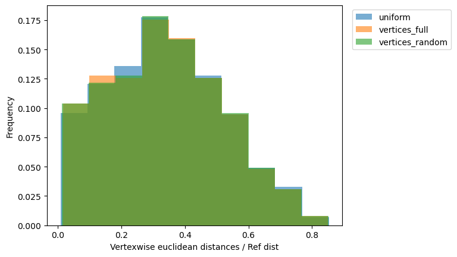
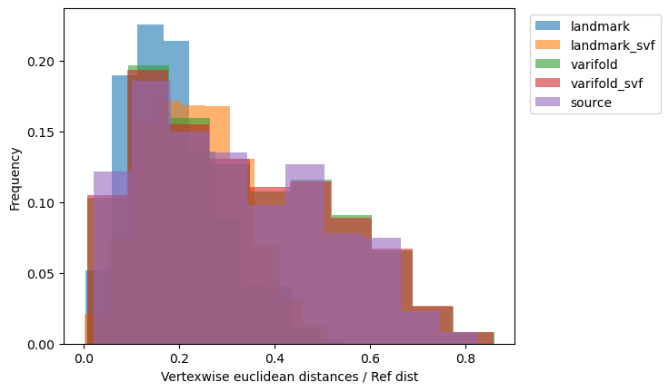
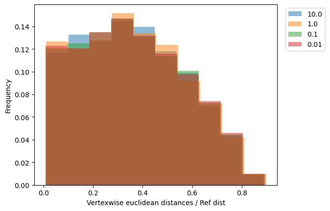
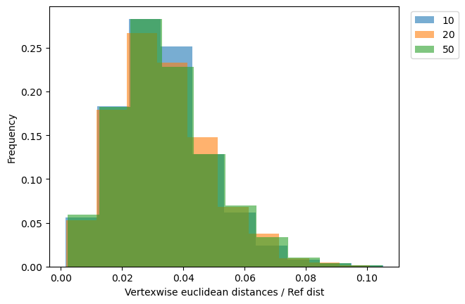
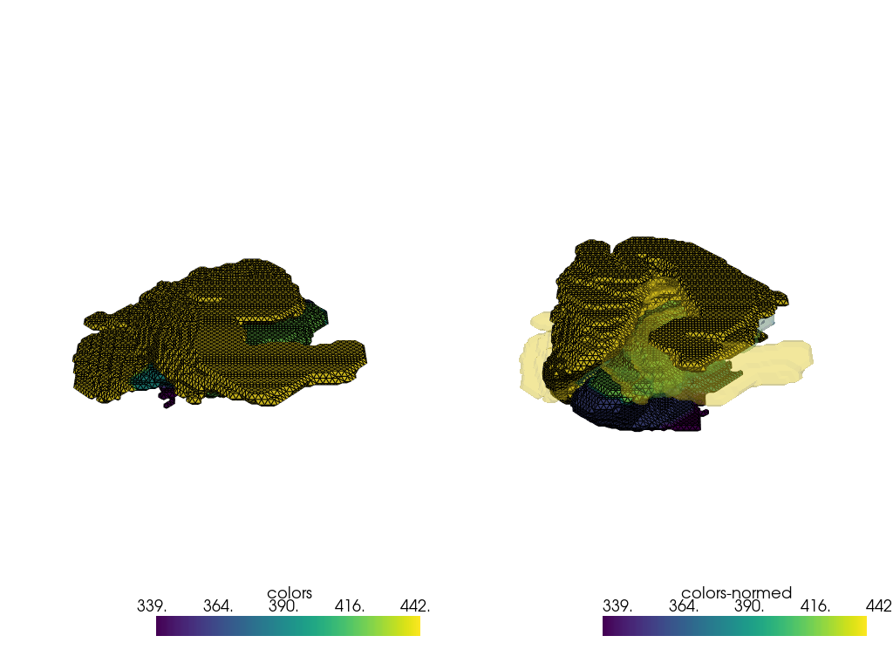
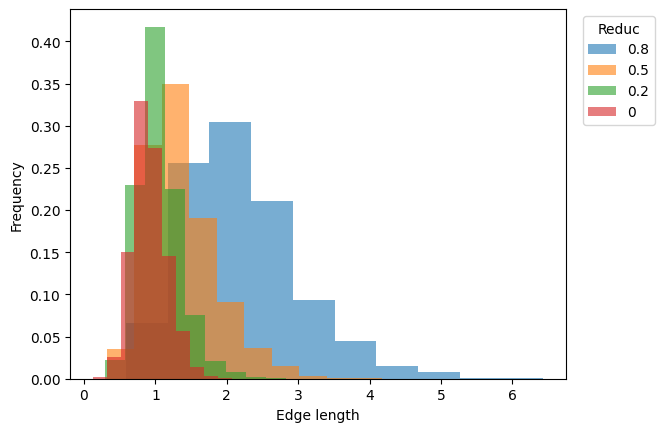
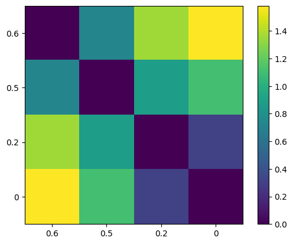
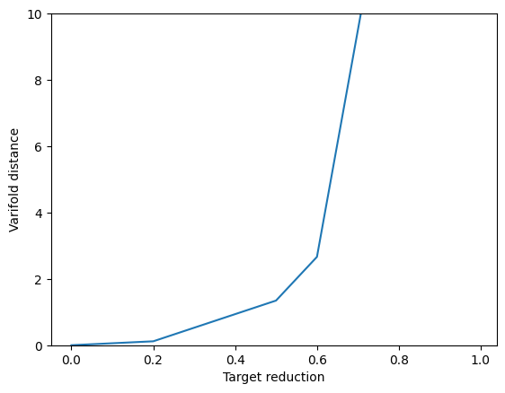

Tutorials#

How much decimation is too much?

LDDMM: influence of control points location

LDDMM: importance of the data attachment term

LDDMM: influence of regularisation

LDDMM: influence of time points

Identify left-right swap in brain segmentation data

Impact of decimation in the automatic selection of the varifold kernel width using a decimation-based approach

Pairwise distances between different parametrizations of the same shape

How much decimation is too much? A varifold perspective

Within dataset varifold distances
LDDMM#
Varifold#
Decimation#
All#
How much decimation is too much?
LDDMM: influence of control points location
LDDMM: importance of the data attachment term
LDDMM: influence of regularisation
LDDMM: influence of time points
Identify left-right swap in brain segmentation data
Impact of decimation in the automatic selection of the varifold kernel width using a decimation-based approach
Pairwise distances between different parametrizations of the same shape
How much decimation is too much? A varifold perspective
Within dataset varifold distances